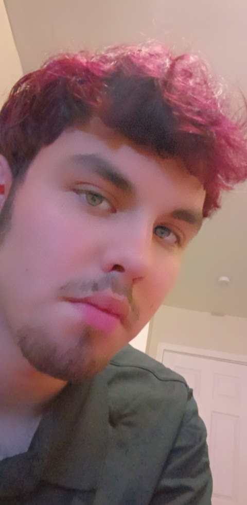

Benjamin Blackburn, the circumspect visionary
My name is Benjamin Blackburn and I'm 18 years old. I am a senior in high school, not exactly your “straight A” student. I am a child of three, who was the middle child but the most mature of the three. I have written spoken word poetry and have performed in front of others in the past. I wrote about loss and the mental state I was in, I’ve written about love and how fragile minds truly are.
My current classes in high school are Algebra 2, Intro to Art, Geometry, Sociology, Gym, and World History. My favorite class I have ever taken has to be Psychology, it opened my mind and I started to understand more of the reason people act the way they act. My least favorite are my math classes past 9th grade, reason being I just really dislike math.
Future Careery and Job Interests
What I want to be when I get older is a one on one therapist. Sure I have a gift in writing poetry, maybe I can do that on the side, but I want to help people get through their problems, I know I can't make that choice for them but I can least try to lead them in the right direction, I want to be a catalyst of their personal growth in life.
Some professions that interest me are Social Work, Writing, and Psychology. Social Work because I get to help others personally and hear them out, at a personal level for them. Writing is because I know that sometimes writing gets to more people than Therapists or Psychologists. It's cheaper to buy and it will help ease some stress on my end as well. Psychology, yes learning psychology may take longer than the rest but i can get a better understanding of the human mind.
Hobbies and Interests
Three things I do in life outside of school are read, watch anime, and play video games. What I read is mainly fiction, romance or manga. One of my favorite book series is the “Heroes of Olympus” novels by Rick Riordan. I watch many anime, I can’t say that I have a favorite topic of anime but I have a favorite it’s name is “ Tokyo Ghoul”. With video games I take an interest in action games ranging from the “Mortal Kombat” franchise to the “Arkham” Batman franchise.
Future Plans and Ending
This summer I plan on visiting more family, and getting a summer job, possibly stocking things up in the back or pushing carts or something in that range of work. I also plan on going to the movies, assuming the Covid-19 virus dies down. I would like to go more places where I can recite poetry like an open mic.
I have a real passion for helping people be better than the person they were before. I love helping people recover from things. It brings joy to know someone is doing better than they were before, I love seeing people happy.
One of my favorite pictures is one when I had dyed my hair purple years ago. Here is the picture below:
